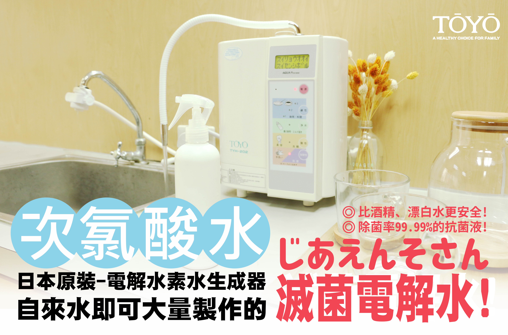
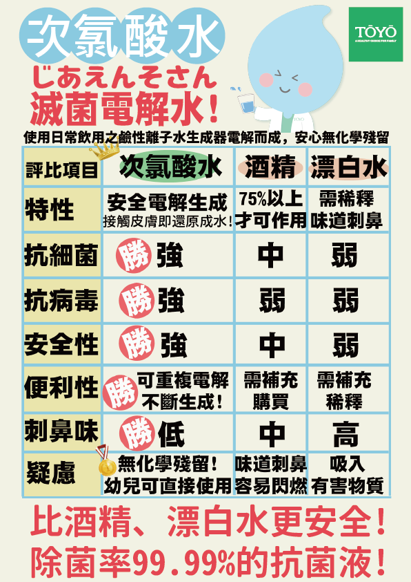

日本厚生勞動省認證7段酸鹼值，可同時生成【鹼性離子水】/【次氯酸水抗菌液】
次氯酸水(以下稱超酸水)使用家中/辦公室自來水，即可大量製作!
- 液晶顯示，一目了然
- 語音導引，使用方便
-
(藍色)鹼性水PH8.5~10
飲用/烹飪，日常保健、改善腸胃道問題。 -
(黃色)酸性水PH4.0~6.0
美容/洗顏，具收斂效果。 -
(綠色)淨水PH7.0
服藥/泡奶粉，中性無電解水。 -
(紫色)強鹼性水PH11.0以上
去油汙/去腥，具洗淨效果。 -
(橘色)超酸性水PH2.7以下
瞬間除菌/脫臭，可製作【次氯酸水抗菌液】- 瞬間除菌/脫臭
- 溫和不刺激
- 無化學殘留
- 用於食器消毒後，建議將死亡的細菌(蛋白質)擦拭
- 抗菌、除病毒
- 安全電解、不刺激皮膚
- 無化學殘留、幼兒可使用
- 異位性皮膚炎可噴撒於皮膚
- 可擦拭於食用器具
-
超酸性水＆強鹼性水的特徵
超酸性水：鹽水經過電氣分解後在陽極端所生成的水溶液稱為超酸性水(生成的次亞鹽素酸，浸透到細菌的細胞膜，停 止細胞的活動瞬間死滅)
強鹼性水：鹽水經過電氣分解後在陰極端所生成的水溶液稱為強鹼性水(含有極微量的氫氧化鈉用於超酸性水使用前脂 質及蛋白質的洗淨用途) -
超酸性水＆強鹼性水的定義
超酸性水：PH2.7以下 ORP:+1000MV以上 鹽素(餘氯)濃度:3ppm以上
強鹼性水：PH11.0以上 ORP:-800MV的環境下，細菌無法生存 - 超酸性電解⽔水會腐蝕⽪皮膚嗎？超酸性電解⽔水是「酸性」而不是 「酸」，不會像鹽酸腐蝕皮膚。其安全性已經過日本財團法人機能水研究協會證實。
 
-三項不同於一般的特色：
-
-
- 它含有更豐富的鹼性溶解礦物質，微量元素如：鈣、鎂、鉀、鈉...等有益離子 -
- 還原水的水分子團組成，由一般平均的十五個減為六個，這使得水分子更易於進出細胞 -
- 氧化還原電位由+500mv逆轉為 - 150 ~ - 350mv，有助於 [ 過剩自由基 ] 的消滅 - - 看完整介紹 -
商品規格
| 型號 | TOYO TYH-202 |
| 電源 | AC110V 50/60HZ |
| 消耗電力 | 約200W |
| 尺寸 | W26.4cm X D19.5cm X H38.8cm |
| 重量 | 5.0KG |
| 電解方式 | 自來水過濾供給連續生成 |
| 電解能力切換 | 鹼性離子水3段/中性淨水1段/ 酸性離子水1段/強酸性水/強鹼性水 |
| 電解材質 | 鈦鍍白金電極板 |
| 電解生成量 | 3～8Ｌ/分(視原水水壓而定) |
| 電極洗淨 | 自動洗淨（洗淨時由微電腦控制） |
| 濾材 | 粒狀抗菌活性碳+亞硫酸鈣 |
| 游離殘留氯 | 總濾過水量12000L以上除去率80% JIS S3210試驗 |
| 無法除去成份 | 溶於原水中的鹽份及金屬 |
| 壽命 | 約一年，或通水12000L後(依水質差異有所不同) |
| 電源裝置 | 保險絲125V 5A |
| 保護裝置 | 熱水警報器，溫度保護，過電流(電壓)保護 |
安裝實例


週邊配件

TOYO 雷射酸性水龍頭

濾頭

愛惠浦 4C 複合式濾心

AK-305 樹脂濾芯
.JPG)
AK-305 PP纖維濾芯

AK-305 活性碳濾芯

TA-903 快捷式前置濾芯

TA-903 快捷式前置濾芯（含蓋）

TA-903 快捷式前置濾芯（組）

TA-800T

MW-7000C 主體濾芯（日製）